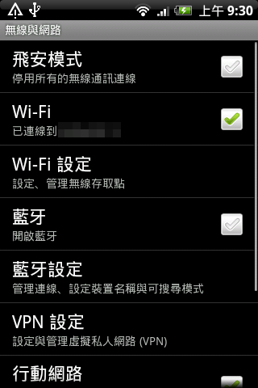
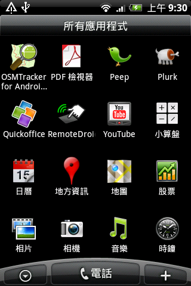
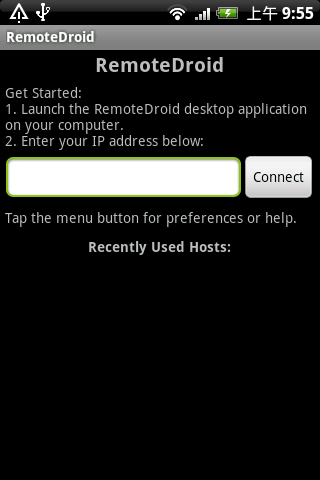
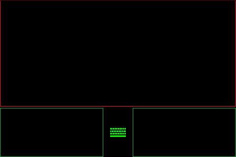

用 Android 手機充當電腦的無線鍵盤及滑鼠

除了可模擬電腦的觸控板外，RemoteDroid 亦可同時模擬電腦的鍵盤，這樣使用者便可透過手機的實體鍵盤或虛擬鍵盤，在電腦上輸入文字。不過這個功能方便與否，要看使用者的手機是否設有實體鍵盤。筆者始終認為透過智慧型手機螢幕上的虛擬鍵盤輸入文字，總是比不上實體鍵盤來得方便。
軟體名稱：RemoteDroid
最新版本：1.4
軟體授權：GNU General Public License (GPLv3)
系統支援：Android
官方網站：https://code.google.com/p/remotedroid/
各位使用者可透過 RemoteDroid 的官方網站免費下載這個軟體。這個軟體分為兩部份：安裝於 Android 手機的 APK 檔案，以及安裝於電腦的伺服器軟體。前者是一個 APK 檔案，以「.apk」為副檔名，透過 Android 手機中的檔案總管開啟 APK 檔案，便可選擇將軟體安裝至 Android 手機。不過，事前使用者要確定 Android 手機的【設定】中的【應用程式】介面，當中「未知的來源」的核取方塊已勾選。後者則是一個名為「RemoteDroidServer」的 ZIP 壓縮檔，將這個 ZIP 檔案打開後，便會發現有一個檔名「RemoteDroidServer.jar」的檔案，那是一個 Java 程式，理論上可於任何支援 Java 的作業系統上執行，包括 Windows、Mac OS X 及 GNU/Linux 系統。以下筆者以 Mac 電腦作示範。
在正式使用 RemoteDroid 時，首先先啟動智慧型手機的 Wi-Fi 功能。要使用這個軟體，智慧型手機與電腦須連接同一個 Wi-Fi 網絡。

▲圖1
然後，便可執行安裝於手機裡的 RemoteDroid 軟體。

▲圖2
執行 RemoteDroid 軟體後，會見到如下圖的畫面。

▲圖3
這時候，使用者便可按照上述畫面的指示，執行儲存於電腦裡的「RemoteDroidServer.jar」程式。如無意外，電腦會出現這個視窗。

▲圖4
視窗中會出現一個 IP 位址，就在「Your IP address is:」字句之後。此時使用者便可在手機中的 RemoteDroid 畫面中「Enter your IP address below:」下的欄位，輸入電腦顯示的 IP 位址。

▲圖5
再點選〔Connect〕。如無意外，手機會顯示如圖的畫面。

▲圖6
這就是 RemoteDroid 模擬電腦觸控板的操作介面了。為了方便操作，使用者更可將手機以橫向的方式擺放，令 RemoteDroid 的操作介面切換為橫向式。

▲圖7
RemoteDroid 操作介面下方的左、右長方格分別模擬電腦的滑鼠左鍵及右鍵。在手機螢幕上點擊這兩個長方格，便等同於在電腦滑鼠上按左鍵及右鍵。

▲圖8

▲圖9
此外，智慧型手機的導航鍵亦可充當電腦的方向鍵，手機導航鍵可模擬為電腦的〔CTRL〕鍵，而手機的〔MENU〕鍵則可模擬為電腦的〔ESC〕鍵。
如果使用者所用的智慧型手機不設實體鍵盤，RemoteDroid 操作介面下方中間會出現〔鍵盤〕圖示，點選這個圖示則可啟動手機的虛擬鍵盤，之後使用者透過虛擬鍵盤所輸入的文字，都會在電腦上重現。如果使用者所用的智慧型手機設有實體鍵盤，直接透過實體鍵盤打字便可。

▲圖10
最後，按下手機的〔返回〕鍵便會結束 RemoteDroid 的模擬模式，返回主畫面。下次使用者再次使用 RemoteDroid 的時候，便會發現主畫面中的「Recently Used Hosts」會列出曾經連接過的位址。

▲圖11
You may be interested in the following articles:
- 利用 Android 手機記錄行程及途經點 - 2010-10-01
- 利用 Android 手機記錄 GPS 行程 - 2010-08-23